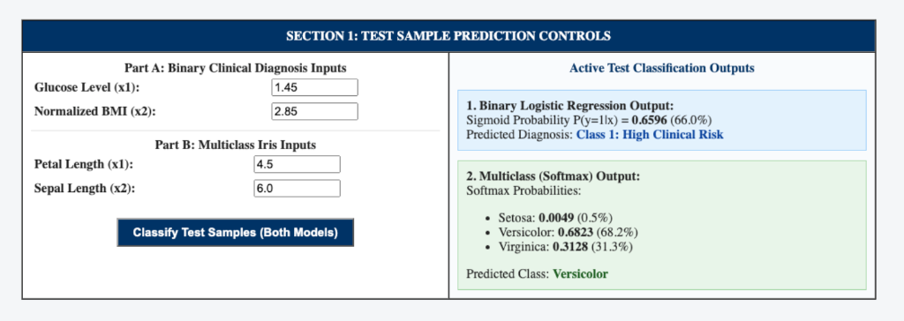
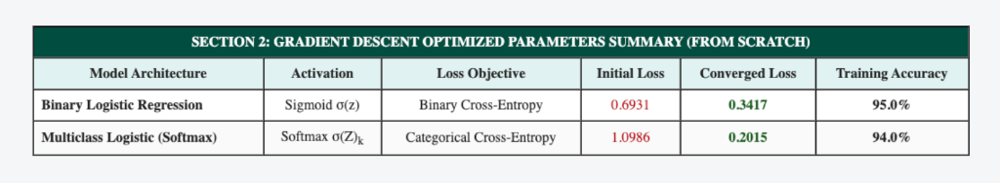
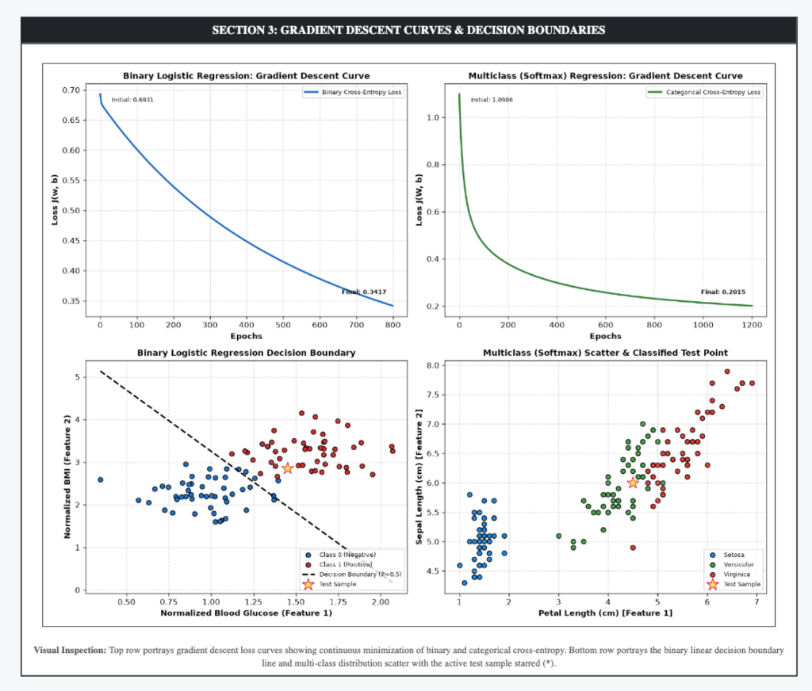

| Experiment No.: | 08 | Student Name: | Monis |
| Course / Branch: | B.Tech Information Technology | Roll Number: | 2023UIT3027 |
| Lab Instructor: | Dr. Vishal Maheshkar | Academic Session: | 2026–2027 |
Implementation of Logistic Regression for Binary and Multiclass Classification from Scratch Using Gradient Descent in Python
To implement Logistic Regression from first principles in pure NumPy without using pre-built machine learning libraries for both: 1) Binary Classification (using the Sigmoid activation and Binary Cross-Entropy loss) and 2) Multiclass Classification (using the Softmax activation and Categorical Cross-Entropy loss). The system derives analytical gradients, optimizes weights and biases via Gradient Descent, plots cost convergence curves, and displays linear decision boundaries in Flask.
Binary Logistic Regression: A generalized linear model that maps linear feature combinations through the non-linear Sigmoid activation σ(z) ∈ (0, 1) to model class posterior probability P(y=1|x).
Multiclass (Softmax) Regression: A generalization of logistic regression to K mutually exclusive categories where normalized exponentiated class scores sum to 1.0.
Cross-Entropy Loss Surface: A strictly convex loss formulation derived from Maximum Likelihood Estimation (MLE) that heavily penalizes confident wrong predictions.
Linear logit z is squashed into the probability interval (0, 1) via the Sigmoid function:
For K mutually exclusive categories, unnormalized linear score matrix Z = X W + bT is normalized:
Interface allowing selection of Binary/Multiclass models, learning rate, iterations, and test sample coordinates.

Displays converged weight vectors, bias terms, training accuracy, and final Cross-Entropy loss.

Dual visualization showing smooth Cross-Entropy decay curves and the resulting linear decision boundaries separating classes.

Experiment 8 verified the mathematical elegance of Logistic Regression implemented from first principles. By leveraging the Sigmoid function for binary tasks and the Softmax function for multiclass problems, the experiment confirmed how convex Cross-Entropy minimization via analytical gradients guarantees stable convergence to optimal decision boundaries separating non-overlapping feature spaces.